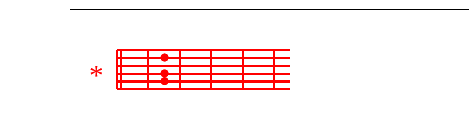

M.DMaria, mdogo MFd-aria,
nGdiwe upepo mtE-ulivu wa E-6*Eliya,
sA7auti ya Roho wa DMungu.
U kijiti kiwakacho cha Fd-Musa,
unGayebeba Bwana, usitekA7etee.
U Dwewe: “Mahali karibu Fdnami”
ambapo BGwana alimwonyesha DMusa;
u Gwewe ufa wa mDwamba
anaofunika na mAkono
utuGkufu wake unapoDpita.
K.DBwana aende Fdnasi
iGkiwa tumepata rehema Dyake;
ni kGweli kwamba tu wadDhambi
lakini utuomAbee
na tutaGkuwa uArithi wa YahDweh.
M.DMaria, mdogo MFd-aria,
Gbinti wa YerusA7alemu;
DMama wa matFd-aifa,
BiGkira wa NazA7areti.
U Dwewe wingu lilinFddalo Israeli,
Ghema la kukutaDnia,
SanGduku linalobeba ADgano,
mahali pa maskani yake BAwana,
heGkalu Ala ShekiDnah.
K.BDwana aende Fdnasi...
M.+K.U wewe: “Mahali karibu nami”...
